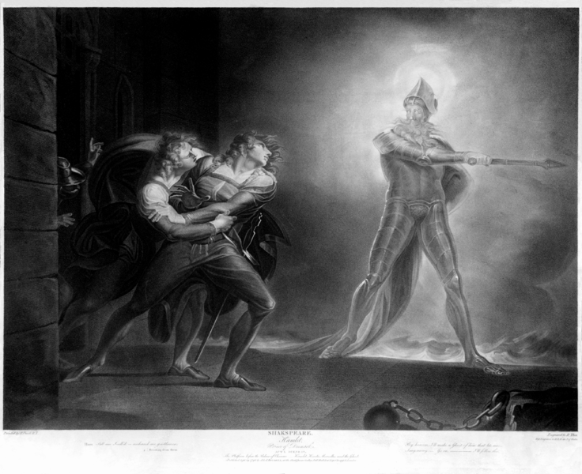

{kind=link}
It’s a supreme finding of Hume’s clever reasoning that ought cannot be derived from is. The claim is so irrefutable that it has become a truism that acts as a bulwark against proponents of the status quo. But like a lot of reasoning, it refutes a whole swathe of assumptions without anything substantive to say about how we do or should live. Reason in this case is destructive, not instructive, an amoral tool that has no bearing on our core moral principles even if its boosters would like to claim otherwise.
Amoral Reason Unmoored
An illustration of how reason alone can make a mockery of ought was made inadvertently by Plato. Plato reasoned to ought from first principles when writing The Republic — and produced a work that is both intellectually arrogant and morally repugnant.
Plato’s vision of a perfect republic is a frightening dystopia that mixes a caste system with a centralised proto-communist state that goes to the extraordinary lengths of keeping children ignorant of their parents. In this perfect state ruled by philosopher kings, Plato argues the ethical life is knowing your place because the structure of society is itself correct.
The bizarrity of Plato’s perfect state derives from his poor underlying epistemology. Plato privileged explicit reason at the expense of embodied and practical knowledge, which its silent nuance no words or concepts can adequately express. Plato’s allegory of the cave, with its troglodytic gropers toying in the shadows while the literally enlightened basked in the warmth of the sun, worked a mesmeric sleight of hand on his stunning failure of an epistemology. Although philosophy gets ridiculed for never making progress, I can point to The Republic and tell you it very much has.
I give Plato a right kicking here to emphasise the vast gulf between reason and the silent, embodied knowledge that reason has no access to. Reason to embodied knowledge is akin to Respect’s robotic sheet music to Aretha’s soulful rendition. As much as we can appreciate the sheet music, what moves us is the rendition. Our moral sentiments bubble up primarily from this embodied knowledge, inexplicable to coarse reason, a function of instincts and social norms. This is not to say reason plays no part in guiding our moral sentiments, but reason is certainly not the source of them.
Morality Outside of Reason
Considering that the cold workings of reason alone cannot establish ought, there is nothing universal remaining in the human toolkit from which to base morality. What is moral must be contingent. And because it’s contingent, morality is path dependant, relying on history and social life for its development. Certainly reason plays a role in all this, but in no way a decisive one. Instead, morality is spread out and worked out among people in social settings with the whole range of human faculties brought to bear on the question of ought.
In this way, morality is akin to language and economic life, a kind of spontaneous order. A person’s language is developed out of one's own innate aptitudes and instincts combined with social learning and reinforcement over time; a person’s morality develops in much the same way. The moralities of societies respond to specific histories and traditions to promote community survival and flourishing; they live, die and adapt accordingly.
Take the notions of private property, inalienable human rights and the individual pursuit of happiness. Among bands of hunter-gatherers, such notions make no practical sense and would lead to societal ruin. Similarly, communal property rights makes no sense in complex modern societies of immense number where most people are strangers. The right or wrong of these basic moral sentiments is determined by what can allow a society to function. Over time, these behaviours will be reinforced by norms and the stories a community tells itself to shape the moral leanings of its members. And over a really long time, these behaviours are inscribed into our genes as instincts.
Expressed another way, the beliefs bound up in a morality must first ensure a society or community can survive to be considered in any way “right”. Plato’s Republic fails the sniff test because it seems so absolutely inconceivable that any collection of humans could actually function together in his vision. What is “right” must be a function of what an actual community can propagate. Whether that be hunter-gatherers or individualistic moderns, if the morality a community takes on cannot serve to propagate the community, it is “wrong”.
The deficiencies of thinking of morality divorced from societal success can be demonstrated by taking the opposing view to extremes. I cited Plato’s Republic to illustrate how reason is often at odds with a plausible moral reality, but that’s just a sample of how weird things can get! Currently, there are environmental groups advocating for human extinction to protect the earth. If one’s central moral axiom is that human impact on the environment is wrong, reason cannot counter it. In fact, it’s reason that drives one to the conclude that human extinction is the aim based off the central moral axiom.
And without societal success to fundamentally ground your moral axioms, anything is permitted. If dogs are the best people, why shouldn’t humans serve the needs of dogs and ensure their every pleasure? If children are morally pure and innocent, why don’t adults follow their moral lead? If an imagined Platonic society of the Ideal Good is better served by breaking the bond between mother and child, why not break it? None of this means societal success is the sole determinant of what is moral, but rather that societal success is the first hurdle. Nevertheless, this hurdle establishes one important reason for why ought is anchored to is: the existing morality of a long-lasting community proves its societal success, so the burden of proof lies on any ought that diverges too far from is.
Morality and Time
Morality does, however, change over time; ought does diverge from is. Humankind began with the more communal morality of hunter-gatherer bands and from such humble beginnings, inexplicably and unexpectedly, the complex societies of today developed.
The first speed bump on the way to the complex societies of today is known as the Dunbar number. Small social groups break down when their members are more than about 150, the Dunbar number, where communal norms become impossible to mutually enforce and relationships to maintain. Once the Dunbar number is reached, hunter-gatherer bands had two options: splinter off and maybe maintain loose relations between bands or adapt. For the majority of history, bands of hunter-gatherers chose the first option and the social norms remained the same across a set of smaller social groups of about 150 in size.
To break past the Dunbar number, the social norms of hunter-gatherer bands had to change on the way to producing the complex societies of today. Nevertheless, there was no philosopher dreaming up a vision of society in theory that proved morality had to change. Instead, new social norms that coalesced into an overarching morality were adapted and tried out over time in various conditions. With the advent of farming, a morality that allowed for stratification and hierarchy could be successful, accomodating complex societies of much greater than 150 members. This new moral blueprint was arrived at independently throughout the world and came to encompass the vast majority of the world’s population, taking over the geographical space previously allotted to hunter-gatherers by force of might. Any other moral experiments that took place and failed to produce a society that propagated itself over time died with its adherents.
Moral Axioms in Conflict
A big factor in this moral evolution is that humankind’s moral axioms when played out in practice are often in conflict. Much analysis is done focussing on the rightness of a particular moral principle, say the Golden Rule. But there is never a single moral principle driving human behaviour. The morality embedded in a society encompasses a set of beliefs, never one, and there is often no way to decide categorically between them.
Take, for instance, the tendency to treat everyone equally and fairly, which in Western society has been sanctified by the Christian edict to consider everyone equal before God. This universalist bent butts up against the particularising tendency of humankind to treat more favourably those who belong to one’s in-group, especially so all the way down to the immediate family where the bias is most strong. The now detheologised Christian edict has been gaining ground on in-group bias in recent history, but it’s highly unlikely that treating an unknown person even remotely as favourably as a member of one’s immediate family will ever be taken up widely, regardless of how Plato would like us to live.
Be that as it may, deep in-group bias going so far as thoroughgoing racism could easily make a comeback in our moral estimations, and it could well be the morally sound thing to do. In a potential world of mutually hostile social groups competing for the same piece of the pie, a morality that includes thoroughgoing racism may be advantageous and increase the chances of you and your family continuing to live. Highfalutin notions of moral progress is not a consideration when your family is threatened: all that matters is survival.
In this respect, racism and in-group bias can be a viciously self-reinforcing cycle. The greater the number of competing groups hating out-groups, the greater the need to continue the unifying hate within your group.
This self-reinforcing cycle when flipped on its head is an important factor in explaining how racism has been losing ground since the industrial revolution. The after-effects of the industrial revolution and the rise of capitalism more broadly minimised the importance of winner-takes-all resource extraction and land accumulation compared to peaceful well-maintained business. Never before has equality among peoples become so mutually beneficial as the pie has grown bigger and with more people seated at the ever-expanding table. Thus, the human tendency to want to treat people fairly could gain ground at the expense of the human tendency for in-group bias. This then comes part of the way to answering whether slavery was abolished for moral or economic reasons: it’s both! The economic changes wrought by the industrial revolution led to the reweighting of moral concerns that favoured treating all people more fairly because one’s in-group was no longer harmed and potentially benefited by more people contributing to the common weal.
Moral Progress Within a Spontaneous Order
Morality as a spontaneous order, where innate moral tendencies are played out in a long-running social setting, is at odds with notions of moral progress that seeks to define itself in relation to some ideal. We get a glimpse of this tension between the two modes of thinking about morality when it’s said that we shouldn’t apply the moral standards of today to the past: is that because social and economic conditions were different or because our morals have progressed?
This tension becomes outright inconsistency and perhaps even a form of self-loathing now that it’s considered acceptable in some circles to apply current moral standards to one’s own society in the past while avoiding the application of the same moral standards to foreign cultures in the present day. Thus, for instance, it’s open slather to decry the sexist attitudes of the West’s past while any criticism of foreign contemporary cultures whose moral norms are far more patriarchal is just not done. Hartley’s the past is a foreign country; they do things differently there does not seem to apply, never mind that a modern-day Swede has more in common with a Korean than he or she does with a Swede of the nineteenth century.
Nevertheless, the notions of moral progress and morality as a spontaneous order can still be considered as two sides of the same ethical coin when dismissing moral universalism. Women’s rights is an excellent case in point. Over the past three centuries, we’ve seen the rise of birth control mean women can worry less about men leaving them pregnant and the rise of machines minimising the comparative advantage men have in labour while the maintenance of the home became far less time consuming. As such, women can be as sexually promiscuous as men with far fewer consequences and face far less comparative disadvantage in working outside the home. And as men and women’s situations are becoming increasingly similar, the innate human tendency to treat all people equally is again winning out. In this way, there is a form of moral progress taking place because the underlying conditions have changed, which has an almost inevitable moral suasion all of its own, in this case pushing accepted norms closer to an idealised pole.
If we were to see material conditions reverse in the future, if we were to see the loss of technology and know-how over time, I argue too that our morality would “reverse”. Even on a trajectory from our current moral state, in a hardscrabble world where comparative advantage to male work outside the home grows larger and the work inside it more time consuming, social norms would shift to demand more rigidly defined roles for men and women. Granted, greater equality between the sexes would have its own traditionalist pull that may well smooth out the harsher aspects of the plight of women in the deeper past, but the advantages accruing to a society arranged more rigidly would win out. Consequently, moral progress when conceiving of morality as a spontaneous order implies a different end goal, or telos, one that leads towards societal success rather than some ideal moral vision.
The Immorality of Moral Universalism
Morality as a spontaneous order is essentially a distributed and evolutionary understanding of how societies come to decide their norms. Changes in material life will create changes in moral life and vice versa. Eternal moral truths or any kind of moral universalism is just a long-term recipe for stagnation and makes humankind more fragile. As material life has converged across the globe, so too have moral values, which make it appear that moral absolutes are gaining the ascendancy. But I consider this a reflection of the convergence of material conditions across the various societies of the world, which in turn makes certain moral values more or less appealing over time.
As with other systems subject to evolutionary pressure, variance is an important factor in governing the overall long-term health of human societies. And that’s where moral universalism becomes immoral: it makes humankind ultimately more fragile. Morality is a function of human behaviour designed to produce better lives and anything that does not have survival as its core mission is self-defeating. As such, variance in morality among human societies must be the goal as it provides greater insurance against calamity at the expense of standardisation.
Although a kind of moral universality has set in, the acceptance of a certain amount of moral variation within communities subject to the same law has been an important countervailing force. As opposed to the height of the Spanish Inquisition, the law in Western societies provides the leeway for communities as diverse as the Amish and assorted hippies to each go about their ways. Bubbling under the surface of any society of sufficient complexity is a series of beliefs that break with the mainstream. Occasionally some break out and win across a society. The totalitarianism of communist and fascist states stifle that moral release valve, that adaptability, which renders their societies ever more fragile as time passes.
All is not rosy in the liberal world order, however. In most of the liberal world, we are not replacing ourselves. The fertility rate is as low as 0.83 in Singapore, 1.26 in South Korea and 1.44 in Italy. Something is amiss. If the nutty environmentalists who wish to see humankind die off leaves you cold, so too should the current trends in liberal societies whose end will be much the same if they were to continue. When totalitarian states such as Saudi Arabia and Turkmenistan are capable of expanding their population with fertility rates of 2.37 and 2.84 respectively, you have to wonder why liberal societies generally would rather not reproduce themselves. Israel’s fertility rate of 3.11 is the one stark anomaly, which potentially points to where other liberal societies can lift themselves out of their declining funk.
Low fertility rates across liberal societies also highlights how the collective effects of any set of beliefs that make up a morality can ultimately undermine them. Sitting in Australia, I am largely supportive of pretty much most of the social and moral norms that prevail. There’s barely any that I think need change. Individually they seem fine. When considered collectively, however, the low fertility rate that appears widespread signals something has gone wrong. The whole here is less than the sum of its parts. Maybe only a few tweaks to tax policy are necessary to ensure more people wish to propagate their own society. Maybe, following Israel’s lead, a greater emphasis on national identity and ties to community is required. Whatever the case, fertility rates below reproduction level is an example of a worrying collective effect for any society that otherwise considers each of its individual norms to be sound.
Is, Was and Ought
There are grammarians who have a jolly good time arguing over what’s a correctly constructed clause oblivious to ordinary people who are actually talking in a language and confounding whatever “rules” have been dreamed up. I consider a great deal of moral philosophy to be engaging in much the same activity, which is why I’ve written a lot of words about morality without bringing up deontology, rights, consequentialism or virtue.
Too much moral philosophy is spent arguing about ought at the expense of examining is or even what once was. Anthropology and history should be the fields through which moral philosophy informs its positions, not the other way around. The richness of the existentialists and the stoics lies in their analyses of the human condition that embraces history and the moral choices we all have to make as part of societies in which we find ourselves. Conversely, the pursuit of universal moral truths or formulas flies in the face of the contingent and seemingly irrational ways humans have lived with one another and survived through time as a species.
So how does one arrive at ought after examining is and was through time and place? I can’t say I know. Nevertheless, the question is akin to asking a linguist to invent a word or prescribe how people should speak. I will happily pontificate about ought and maybe even bring up a philosophical theory or two to buttress my position should doing so suit the audience, but people will do what they do in a way that can’t be reasoned with. Somewhere in the realm of wisdom that falls outside the reach of mere argument can moral change be foreseen or even driven towards the good. And, as history as shown, the most effective moral guides have been closer to the schizophrenic madman hearing voices from beyond than any calculator of reasons.
Apropos of the obviousness of Hume's 'ought' having no relation to 'is' I like Sherlock Holmes remark, “there is nothing more deceptive than an obvious fact”.
A wise man that Sherlock. Also a fictional embodiment of Peirce's abductive reasoning -- shame Sherlock called what he himself did deductive!
Newtonian abduction always seemed on the money to me, but I'd be lying if I said it was more than a feeling, as it's expressed in a sufficiently abstruse way that I can't really follow it. (Suggesting I'm a believer in some simpler kind of abduction as a driver of scientific discovery and justification. But perhaps you can help me out with your own reaction to it).
yes, considering the self-serving fantasies he came up, its amazing how respected Plato was and still is.
I agree with the overall gist of this piece, however there are a few points worth poking at.
While I agree that ought cannot be directly defined by what is, I see ought as merely a subset of what is, contained entirely within the mental states of humans. This makes it entirely accessible to the empirical approaches of science. It also means not only do we each have our own subjective sense of morality, but also our own subjective sense of why we ought to respect the moral sensibilities of others.
Our ability to reason in general is merely relative to our observations (presuming for the moment we actually have the ability to reason). Thus our ability to reason about morality is constrained by our environment (cultural, economic, etc). This means that our capacity to reason will be most effective within political and moral systems with an incrementalist framework.
That's not how evolution works. If we are already exhibiting these behaviours there's no evolutionary pressure for our genes to adapt to genetically push such behaviours. It's when current behaviours are sub-optimal for reproduction that the evolutionary processes privilege particular rolls of the genetic dice.
Firstly, populations are increasing in the liberal world. If all you are concerned about is the continued survival of a moral system, where the individuals supporting that system come from is not of concern. As you note, if circumstances change and societal continuation is no longer feasible using immigration, moral perceptions and social behaviours may very well change.
Secondly, I'm not sure you've made the case for a moral axiom of survival above all else. If one can make a case for euthanasia, that an individual can decide the cost of continued survival is too high, can you not make the case also at the societal level?
I'd never heard of Newtonian abduction. And I'm still not sure what it is after looking at the results of that link!
Desipis
This stuff is a bit beyond me so forgive my clumsiness. Isn’t the separation of ought and is , a false opposition ?
Whatever is currently is , it involves an accumulation of history ,memory and myth, therefore whatever is ,currently is, includes a lot of what was once ought?
And from memory the minimum number for long term genetic viability of a mammal of our size is much greater than 150, am I correct?
It's the dialogues -- they're really quite entertaining. It makes for a good entry point into philosophy -- we've all been in those discussions where we wonder what this or that means.
The problem is that the answers proposed are terrible. Philosophy has got better answers to a lot of those questions. Just nothing quite as entertaining as Plato has come up to read. Closest I can think of is Bryan Magee.
And then entertainment value + self-serving fantasy -- what a thrilling combination for philosophy professors!
Thanks for the responses desipis.
On ought as a subset of is when considering human mental states, I suppose you could define it that way. I don't think that was Hume's intention, nor is it mine. I don't see the value in doing so.
And an empirical approach to morality is what I'm claiming is how things should progress. That's because the ought (or is) defined in human mental states is not rich enough to describe the world. I set up Plato as the bogeyman to illustrate that both his ought and is was profoundly wrong. How morality plays out in society, however, is I would say unrelated to science. Science is completely silent on morality. Science doesn't care about whether humans live or die -- only humans care about whether humans live or die.
Also, another underlying claim I was making is that our subjective sense of morality is not really subjective. It's like saying the English I speak is my own. It's not. The language I speak and the morality I follow is everyone's collectively over time and I am just one link in that long chain.
On reason, I don't agree that we reason relative to observations. We don't actually see any numbers anywhere, yet we count. Abstract thought is deeply weird and deeply unempirical. What's a dog? You can't point to any dog and claim that's a dog. Here's where Plato got at an important philosophical problem. It's just that Plato's Forms solution is bonkers. Have you read Funes the Memorious by Borges? It's a short story about a person who can't forget. Because he can't forget, he can't use words like "dog" because he only sees particular dogs. Borges is deeply good stuff.
On behaviours inscribed into genes, I think we agree just that my sentence was short. However I don't think genes need to adapt to push certain behaviours across a population. If 10% of the male population is aggressive and strong, and they produce 90% of the children in the population, it won't be too long before a greater proportion than 10% of the population is aggressive and strong, and that's without the need for any kind of gene adaptation.
On reproducing ourselves, yes, I agree immigration means that actual population numbers are rising, although that's not across the board: Japan and I think Korea is going backwards. But actual numbers is not really my point: it's the overall lack of willingness of people to reproduce that shocks me. It feels very un-human. We've arranged a liberal world whose citizens don't seem to have very low desire to replenish, to propagate, to continue itself. That's a deep WTF moment to me.
And I don't think survival is necessarily a moral axiom. Anything could be a moral axiom. There's really no reason based on logic and our "higher" faculties to say one is better than another. What I do say, however, is that without survival as a moral axiom, there are some very bizarre outcomes that go against our developmental history as a species and should horrify us as human beings. And that many of our moral claims about how things ought to be would in reality produce the breakdown of society. In a battle between sticking to a moral point dogmatically and surviving, most people would just choose survival. And we wouldn't be here if they didn't!
When considering euthanasia, what's good for one person doesn't mean it scales to everyone. I'm very liberal when it comes to drug laws for instance. For the most part, people should be able to do what they want. But there's a potential percentage of people who are stoned off their minds every day above which I would want strict laws to return. I have moral concerns that can be in conflict: society to function and people to be free to do what they want. When too much freedom threatens society's functioning, I saw go ahead and cut down on the freedom.
I have a hard time believing the distinction between ought and is is an invention of Humes. Sounds to me like the kind of thought anybody who contemplates such matters for a while stumbles upon and hence not the kind of thing one could possibly credit to anybody. The discussions in Voltaire's Candide with professor Pangloss are very much on the same theme of that distinction.
I do find it an interesting observation that many individuals automatically ascribe morality towards a status quo. It is a very prevalent habit. It necessitates mass deception among those who want to change things because it makes it cheaper to pretend a change is not a change at all and that the past was something else.
The habit of confusing ought and is in the minds of listeners also makes certain staples of modern discussion very dangerous. For instance: tell people long enough they are patriarchal racist imperialists and you run the very real danger they might believe you and thus start to think of those traits as good things.
I'm sure too that there are antecedents to Hume for the is-ought problem. There are plenty of antecedents to Descartes and his I think therefore I am. But both Hume and Descartes had some very good phrasing. That's important -- it sticks in the mind.
The status quo bias is very strong. But it also runs both ways -- as you say, people start believing what becomes the standard narrative even when it doesn't make sense or itself is very morally dubious.
This whole essay began because I was thinking about tax policy and how it's framed. The state literally takes property/money from people who work and distributes it to people who don't, but because it's so commonplace, no one thinks about it like that. Just a disclaimer, though: I TOTALLY SUPPORT THIS POLICY! I ALSO SUPPORT HIGHER TAXES ON WEALTH (depending on how it's implemented)! Nevertheless, in certain circles, the wealthy are demonised and the poor lauded.
That got me thinking about the status quo bias. The wealth transfer that takes place is already embedded in the system and it goes unrecognised because it's just the standard thing that happens. Meanwhile, the crazy patriarchal racist imperialist trope starts gaining ground despite this widely supported and government-sanctioned wealth transfer system.
This got me thinking about why the status quo bias exists. And then you have this essay I posted.
I too have noticed everything you are saying. The greatest failing of the liberal is the disregard for the evolutionary imperative - to reproduce one's self and one's society. This failing has led to a fair bit of what "is" in the immigration debates in many Western countries. The conservative sees immigration as tribal replacement. The liberal sees immigration as a chance to spread his view of world and reproduce himself non-biologically. But that's just looking at the pull side. The push side tells a much more sinister picture, the destitution and devastation that is driving immigrants to Western countries. This is where we get into the fact that I believe the world economic pie is now shrinking, and has been since the second term of the GW Bush administration, courtesy of the end of cheap energy. Many immigrants come because they feel they have no real alternative; even if they always admired the US, it is only the situation NOW that is pushing them to leave. Therefore we have people coming in many cases that are not interested in becoming Western liberals. They are totally intent on maintaining their own social order within the new host countries. It is possible a generation or two from now, they will assimilate. But the moderating effects of eventual assimilation (even in the face of liberal disavowal of assimilation) are completely overwhelmed by the sheer magnitude of the immigration wave upon Western society right now. "Welcome them all in to economic abundance and liberal ideals" no longer works when the economic system that would take care of them, the economic system that made modern liberal morality possible, is crumbling under our feet. Would that this weren't the case. But it is. As the economic shrinkage continues, life will continue to be better, sometimes much more so, in advanced economies - but only as compared to the rest of the world. New immigrants in 15-20 years will rejoice at living conditions in the US that we would not tolerate today. Western society's legacy populations will continue to diminish as they see the standard of living dropping and question the wisdom of having children under such a trend; of course, the more conservative end of this population will kvetch all the way down about the continued lack of tribal self-interest and get called racist, xenophobic pigs for doing so. In other words - we are facing what is going to prove to be a surprisingly smooth transition to a much lower standard of living over the next 20 or so years. Amazing how it all works out! Just remember your kids aren't going to have a better standard of living than you, unless they get lucky or you are a loser, or both. We've probably got another 30-40 years before morality really gets going in reverse. It won't be led by modern conservative evangelical whites. If I had to hazard a guess it will find its flourishing in all the places the immigrants are coming from as the people there have to reconfigure their societies to survive. There will be several generations of overlap between this reversing morality and the end of the modern energy-intensive industrial lifestyle, where people will begin to transition away from what will by then be crumbling, hallow, only nominally "advanced" countries back to places that are finding more social resilience.
Antonios Apologies I didn't immediately understand what you were saying, at all sigh- by way of explanation philosophical discussions-language is rather foreign to me.
I think lots of people think of their taxes as being taken from them and paid to people who don't work. It's pretty standard stuff.
I'm also wary of describing it in that way. It's not false, but then it's not true either. It's a framing.
I've been reading the French political philosopher Bertrand de Jouvenel (as you do!) and came upon this:
Put more prosaically, all those dollars you earn wouldn't be a tenth of what they are outside of society. This society consists of various public goods – like education, public transport, health, public R&D and so on without which you don't earn your dollars. But it also has to function as a society – which involves payments to those who don't work for various reasons and on various terms.
I'm not saying that these considerations lead to the one true way to frame the payments you describe. They don't. But they do at least show that your description is just one framing.
Yes, Nozick in particular has made quite a lot of strong tax as theft arguments, none of which I buy.
And you're completely right that there is no wealth without society.
But, by the same token, there are those who contribute inordinately to the common weal and are deservedly wealthy and who nonetheless have money taken from them to fund those who only take from the common weal and contribute next to nothing to it.
There are really four poles to the situation: the deserving rich, the undeserving rich, the deserving poor and the undeserving poor.
On one simplistic extreme, there are people who tend to claim there is only the undeserving rich and the deserving poor.
On the other simplistic extreme, the deserving rich and the undeserving poor.
The reality is that there are all four ends and all the variations between.
Yeah well I don't want to downplay the importance of economic dynamism. But the only reason I think we should allow anyone to consume – say – five times more than the average is the ways in which it might destroy the total income available to others.
I don't really take the wealthy's right to their own wealth beyond some level as a very strong ethical argument. There may be strong arguments in expediency for it (economic and otherwise).
At the other end of the scale, I'm good with lightening up on the cost of forcing the unemployed to pretend to look for work (one can't ever do much more). But there's a number of non-economic contributors above which I'd reserve the right to get concerned. I would also be much more supportive of some kinds of cultures that could develop on a UBI than of others.
This is a useful source on Hume and Is/Ought – characteristically for MacIntyre.
I broadly agree with all that.
Especially in this current environment of winner-takes-all effects that seems will only get more extreme, taxation and monopoly law is going to get into some strange areas.
And I tend to think that taxes should be higher for the wealthier among us. But the way it's presented is wrong -- it's not "fairer" or more "progressive" to take even more money from people whose money is already being taken at a higher rate than anyone else.
We should be celebrating every single person who pays every cent of their high taxes! Turn them into rockstars for doing their civic duty and looking after others. Noblesse oblige needs to make a comeback, and not as a charity foundation tax dodge.
And yes, I expect UBI to have very different results in different countries and even different regions.
We seem to be in a lot of agreement about things except that maybe I have more faith about the future.
I am incredibly bullish on better and more renewable technology making energy much cheaper and cleaner in future. I don't think it's the end of cheap energy -- on the contrary, I think we'll look back on this era as being one of dirty, polluting and expensive energy.
As for some of the creeping social ills, I feel correctives will eventually be created.
I really do hope you are right!
Looking at the point about some societies, and I think by extension the moral systems they embody, not even reproducing themselves, there's something tricky to think about here - those societies are over-consuming resources, so their moral systems are doubly flawed: declining reproduction rate (where reproduction rate is being used as a marker of the worth of the moral system), and exhaustion of their resources.
Does the fact that Israel has a very high reproduction rate mean that it is only flawed in one of the two dimensions?
Having reproduction as a "goal" of individuals and societies has not been a problem for humanity or the planet until recently - somehow our moral systems seem to have to adapt to incorporate limits.
I am overwhelmingly optimistic on resource use. I think a combination of the price mechanism and improvements in technology will mean resources won't be exhausted.
For instance, there is more forest cover in Europe now than there has been in decades: https://www.goodnet.org/articles/europes-forests-are-flourishing-more-than-ever
Israel's reproduction rate is probably too high -- 3.11 is crazy fast. Having said that, Israel has one of the most innovative agricultural sectors in the world with great advances in water use and the reclamation of desert
https://www.israel21c.org/top-10-ways-israel-fights-desertification/
In the past too there was a much greater degree of resource exhaustion and general famine despite the smaller populations. Granted, we now face a different kind of resource exhaustion and the possibility of runaway levels of environmental destruction, but I'm incredibly optimistic about avoiding anything that's too massively negative.
I love Hume, especially where he says the institution of private property came into existence to protect society from destruction by people squabbling over resources. In putting society before the individual he was a socialist. In preferring absolute monarchy to whiggism, he would prefer Xi Jinping's China to Biden's USA.